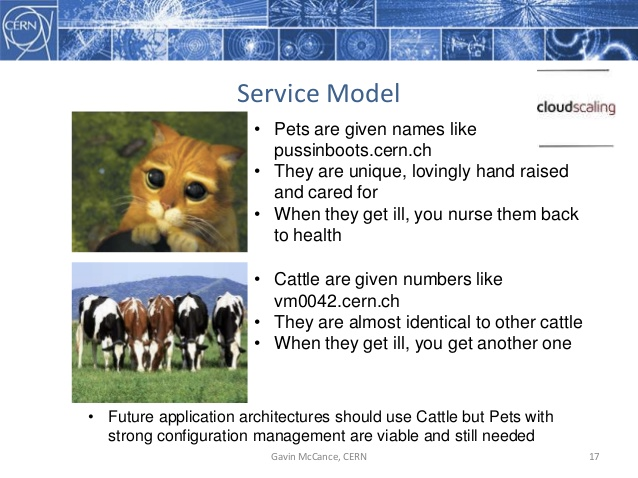

pip3 install git+https://github.com/GoSecure/malboxes.git#egg=malboxesApplying DevOps Principles for Better Malware Analysis
$ whoami
Security Researcher at GoSecure

NorthSec Exec
The Linux/Moose talk guy
Malboxes
Problems of malware analysis
Not accessible to newcomers
Easy to mess things up (get infected)
Building an environment is guess work
Current malware analysis toolchain
Vanilla Win 7 VMs (or more recent versions)
No trace of a previous user
Manual installation of numerous tools
Consequences
Can lead to cross-infected VMs
Can’t build or reuse templates
Time consuming
The 90’s called and they want their methodology back

What can we change?
Inspiration
Shoulder of giants
2 years ago this wasn’t possible…
But now it is, thanks to DevOps tools!
Packer, Vagrant
Chocolatey
WinRM, PowerShell
How can I get this?
How does it work?
Build a profile
You will have a
vagrant box(your base VM)Spin a
Vagrantfilefor each of your analysisUse Vagrant to manage VMs afterwards
You can
Share your prebuilt box in same company
Use trial versions of Windows for instant analysis!
Result
Useful for
Reduce art, augment science
Get new people into malware analysis
Improve workflow of seasoned analyst/teams
Quoting CERN
